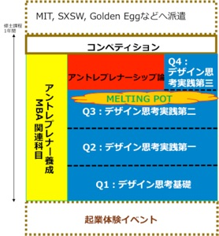

プログラム

教育プログラムは、3 つの大きな柱からなっている。すなわち、
- デザイン思考の基礎を身に着け、PBLによって実践を行う、デザイン思考にもとづくもの・ことつくりピラー
- リーダーシップ論、ファイナンス、知財、製品設計と開発、マーケティングなど、アントレプレナーとして必要とする知識の習得を目的とする、アントレプレナー育成に焦点 を当てたMBA 関連科目ピラー
- 単なるもの・ことつくりにとどまらず、ビジネスプランにまで昇華させる、具体的な事業計画の作り方、ベンチャー起業家やベンチャーキャピタリストによる具体的なケース に関する講義、およびメンターによる起業指導などからなる、アントレプレナーシップ 論ピラー
の3本柱である。